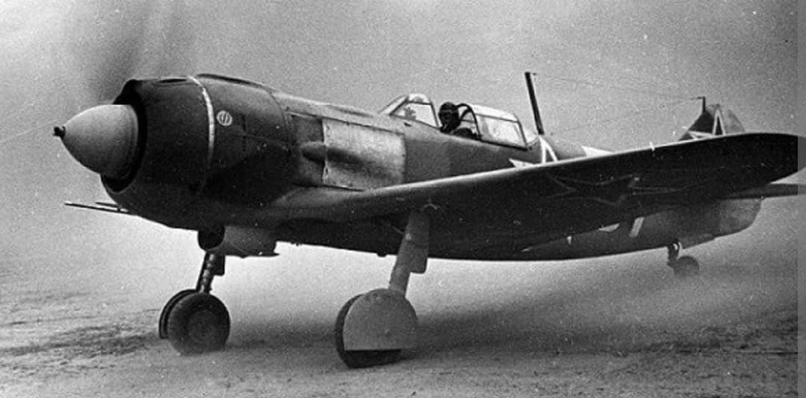
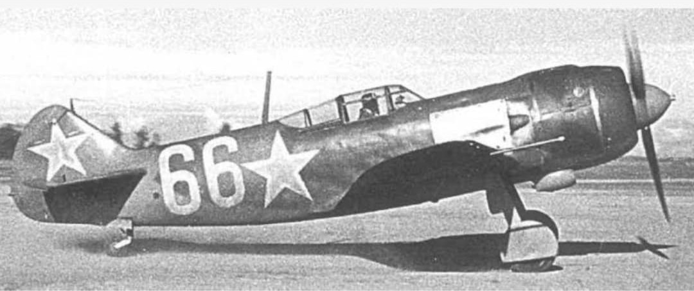
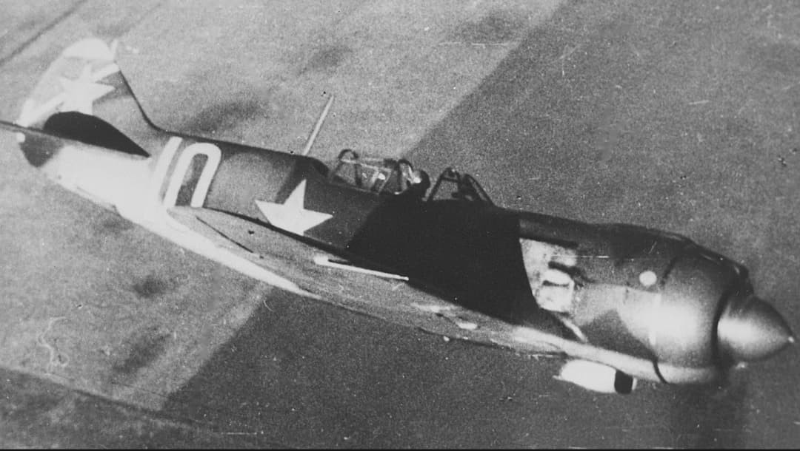

L'alliance d'une cellule en bois et d'un puissant moteur étoile pour stopper la Luftwaffe à Stalingrad

Le Lavochkin La-5 est un avion de chasse monoplace soviétique développé par le bureau d'études dirigé par Semion Lavochkine. Mis en service à l'automne 1942 lors de la bataille de Stalingrad, cet appareil est né du remaniement d'urgence du LaGG-3, sur lequel a été adapté un puissant moteur en étoile en lieu et place du moteur en ligne d'origine.
Cette transformation technique radicale donna naissance à l'un des meilleurs chasseurs d'interception à basse et moyenne altitude du conflit. Robuste, agile et très lourdement armé, le La-5 permit aux pilotes soviétiques de reprendre le contrôle du ciel oriental face aux Messerschmitt Bf 109G et Focke-Wulf Fw 190.
Spécifications de référence du Lavochkin La-5FN (version améliorée de 1943 à injection directe) :

Au début de l'année 1942, le chasseur LaGG-3 était dépassé et sous-motorisé. Alors que le projet risquait d'être abandonné par le dornier militaire soviétique, Semion Lavochkine tenta un pari audacieux : greffer le massif moteur refroidi par air **Shvetsov ASh-82** sur le fin fuselage du LaGG-3.

Engagé en masse lors des combats féroces de **Stalingrad** à l'automne 1942, le La-5 causa une immense surprise aux pilotes de la Luftwaffe qui ne s'attendaient pas à voir surgir un chasseur soviétique aussi rapide et manœuvrable.
C'est lors de la gigantesque **bataille de Koursk** à l'été 1943 que le La-5FN imposa définitivement sa suprématie. C'est notamment sur La-5 que s'illustra le plus grand as allié de la guerre, le pilote soviétique **Ivan Kojedoub** (62 victoires homologuées), qui remporta ses premières victoires aériennes aux commandes de ce chasseur.
Page du Musée HOP WW2 – Lavochkin La-5